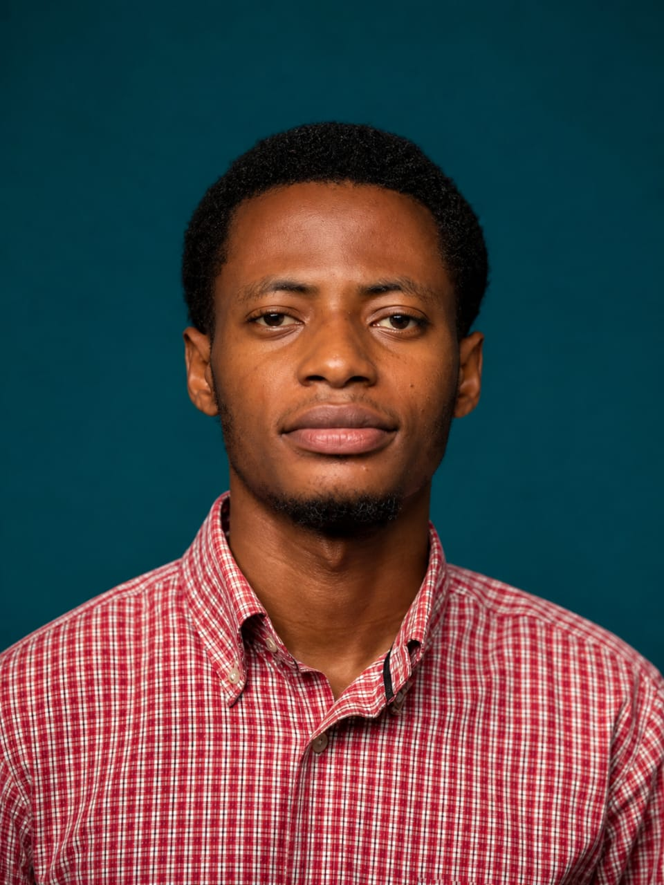

Protecteur de l'Héritage Bantou • Président Fondateur de la Fondation Dynastie Bantou • Conférencier
« Une jeunesse consciente de son identité est une jeunesse capable de bâtir l'avenir de l'Afrique. »
DécouvrirJe suis Soleil Mbayi, protecteur de l'héritage bantou, président fondateur de la Fondation Dynastie Bantou et conférencier engagé dans la préservation des valeurs culturelles africaines.
Animé par un profond amour pour l'histoire et l'identité africaine, je consacre mon énergie à sensibiliser la jeunesse noire africaine à l'importance de connaître ses racines et de préserver son héritage.
À travers mes actions, je lutte contre les formes modernes d'impérialisme culturel et j'encourage les jeunes générations à devenir des acteurs du développement de l'Afrique.
Protection et valorisation des traditions et de l'histoire bantoue.
Sensibilisation de la jeunesse africaine à son identité culturelle.
Interventions publiques sur l'identité africaine et le leadership.
Email : mbayisoleil10@gmail.com
Téléphone : +243 822208110